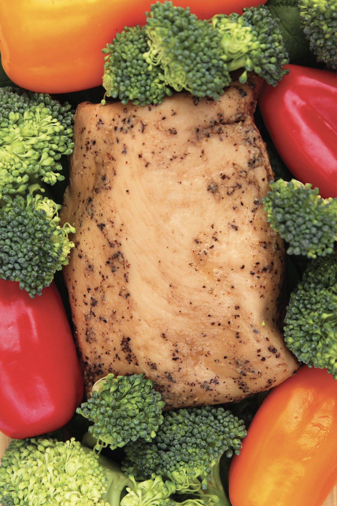
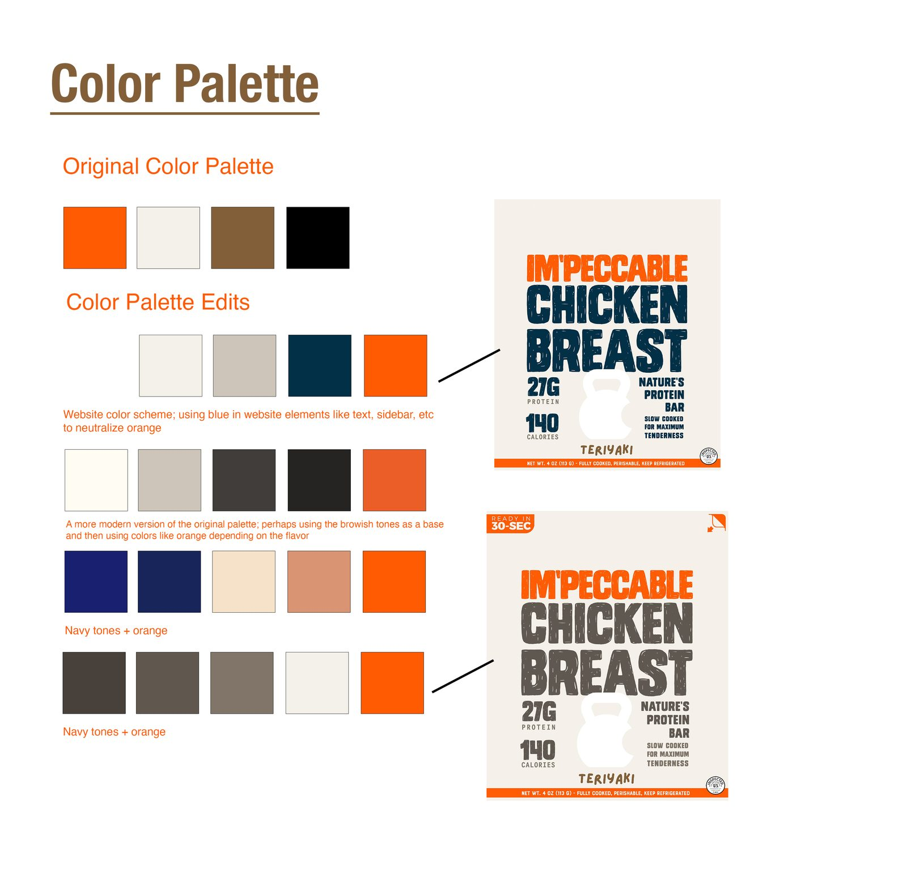
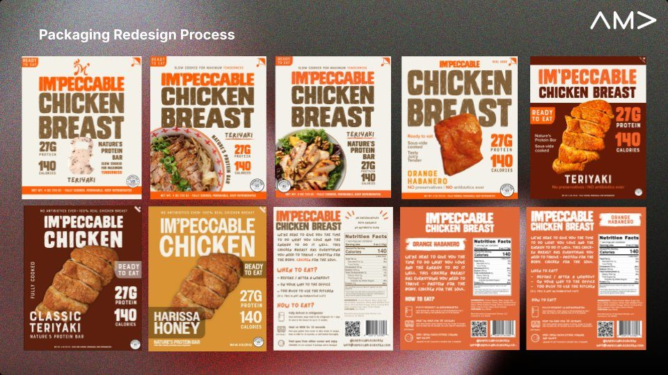
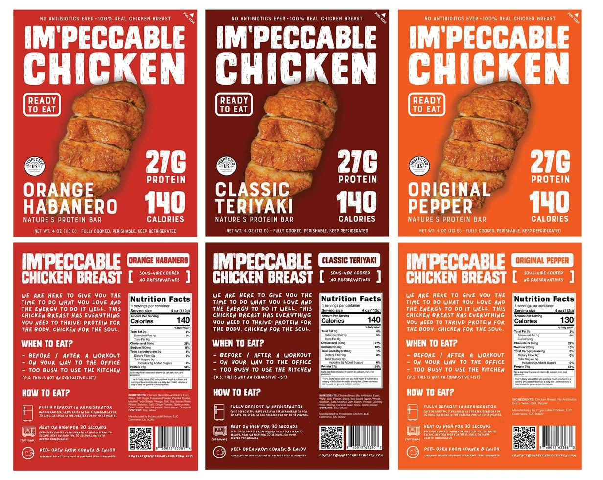
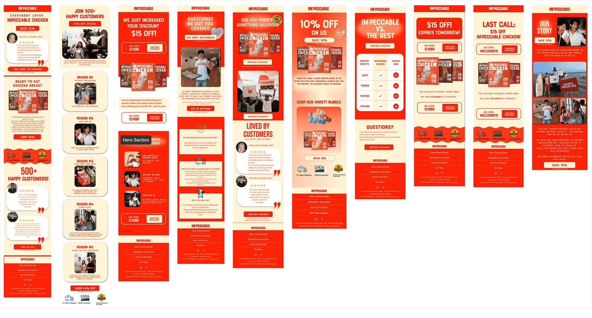
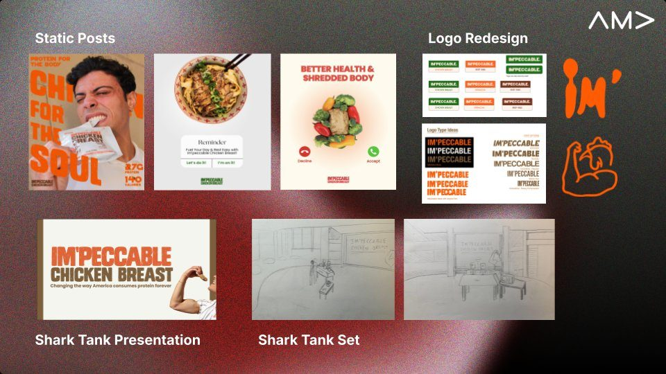

Im'peccable Chicken is a ready-to-eat chicken breast brand. As Design Director for AMA USC, I led the rebrand ahead of their Shark Tank pitch and retail launch, covering packaging, email marketing, and campaign creative.
Visit website
Im'peccable Chicken came to AMA USC preparing for a Shark Tank pitch and their first retail rollout. The existing packaging wasn't built for either context. The goal was a visual system that could scale across flavors, work on a grocery shelf, and translate to both a pitch deck and a customer's inbox.
Tested four directions against the original palette: a navy-grounded system, a warm neutral with orange accents, and two saturated directions anchored in the existing orange.

Ten rounds of iteration to land on the final direction: a stenciled wordmark, hero product photography, and color-coded flavor fields. Three flavors — Orange Habanero, Classic Teriyaki, Original Pepper — each with its own gradient anchor and a consistent callout system for protein, calories, and tagline. The back panel covers brand voice, when to eat, and how to eat.


A twelve-email sequence covering welcome, abandoned cart, win-back, and brand story. Built in Klaviyo, using the same color and type system as the packaging. Each email is structured around one CTA and kept to three sections or fewer.

The brand system extended into static social posts, logo exploration, and the Shark Tank pitch deck — including the set design concept for the on-stage presentation.

Placeholder — write in your own voice. E.g.: what leading a full rebrand under a hard pitch deadline taught you, or what you'd test differently on the next flavor launch.